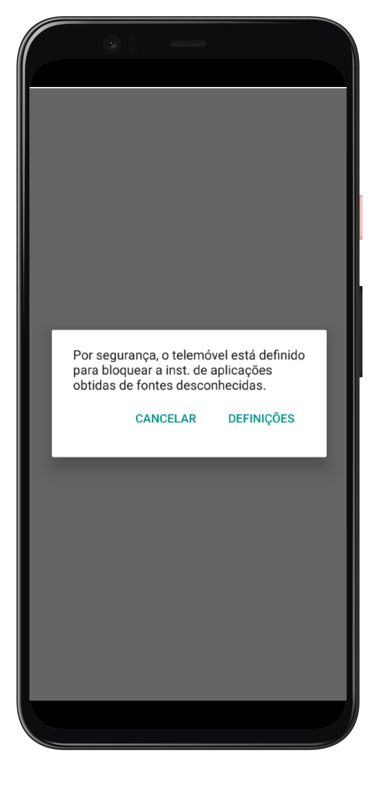
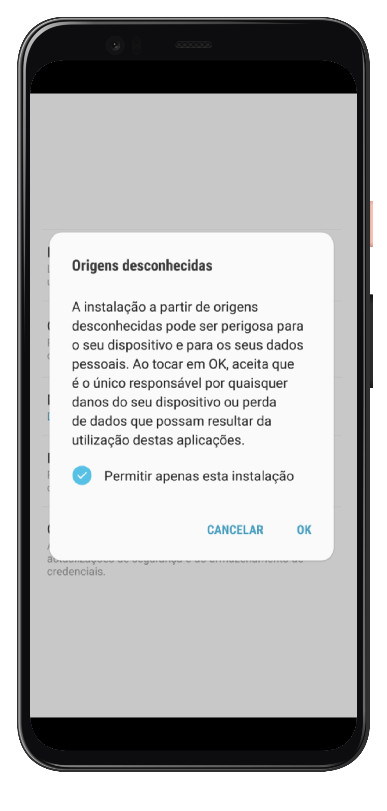

Passo 1: Baixar o Aplicativo ou Fazer Pedido Online
Escolha uma das opções abaixo para continuar:
Baixar AplicativoPasso 2: Permitir Fontes Desconhecidas
No seu dispositivo, vá para Configurações > Segurança e ative a opção Fontes desconhecidas para permitir a instalação de apps fora da Play Store.

Passo 3: Instalar o Aplicativo
A mensagem abaixo aparecerá na tela. Clique em OK para continuar.
Passo 3: Instalar o Aplicativo
Após o download, abra a pasta de downloads e toque no arquivo APK para iniciar a instalação. Siga as instruções na tela.
Passo 4: Concluir a Instalação
Após a instalação, você verá o aplicativo disponível em seu dispositivo. Abra o app e comece a utilizá-lo!